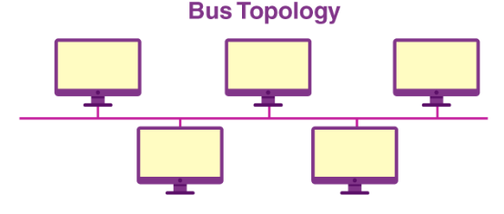
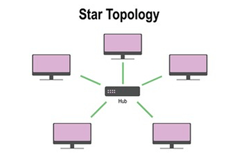
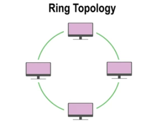
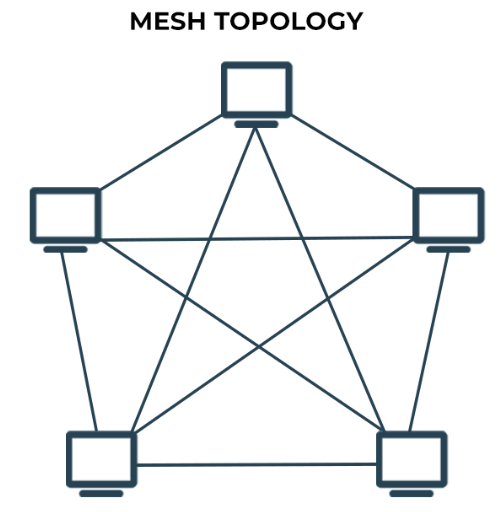
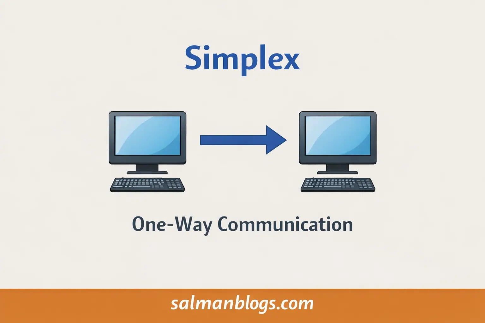
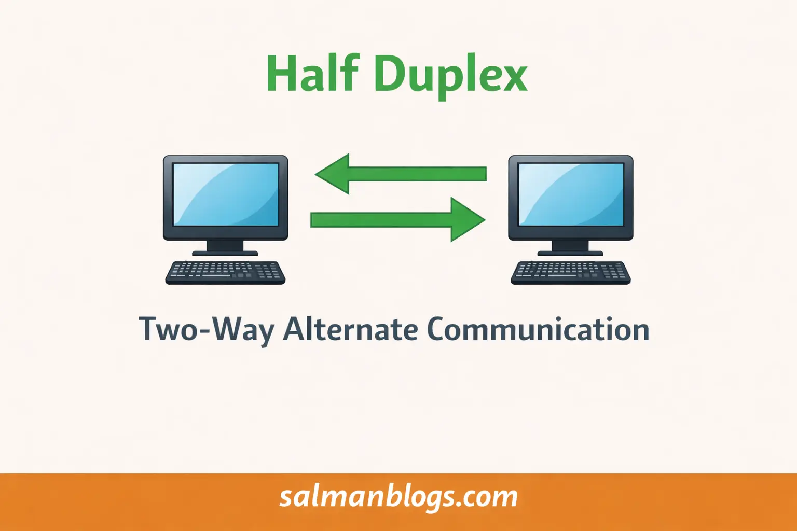
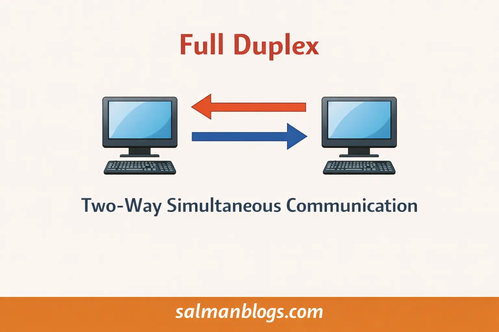
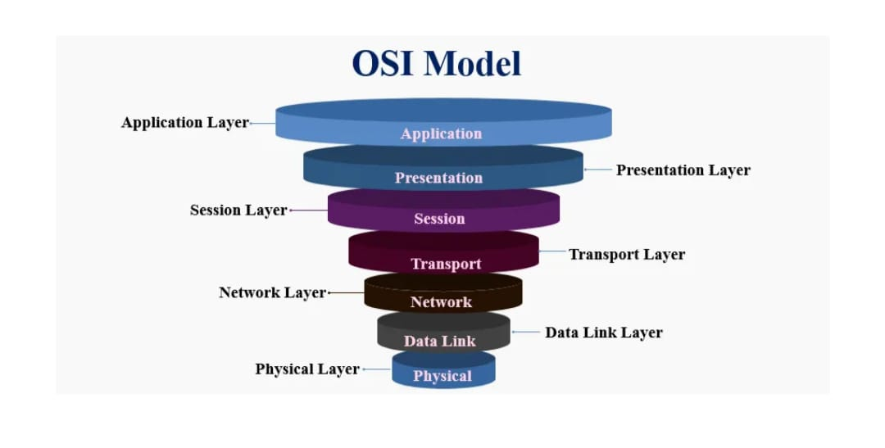

Network Topologies
Network topology means the layout or arrangement of devices in a computer network. Each device in a network is called a node.
Examples: Bus, Star, Ring, and Mesh topology.
Bus Topology
In a Bus Topology, all devices are connected to one main cable called a bus or central cable.
Note: Just not to get confuse. Remember central cable also called backbone cable or main cable as well. You don't need to note down this line. It is just for info. So, you may not get confuse. Examples- Small office networks using a single backbone cable.
- Networks in computer labs.
- Simple classroom computer setups. Diagram:

- Low cost – requires less cable than other topologies.
- Good for small or temporary networks.
- Backbone failure stops the entire network.
- Network performance decreases when many devices are connected.
Star Topology
In star topology all devices are connected to a central device such as a hub or switch.
Examples- Home Wi-Fi networks connected to a router
- School computer labs connected through a switch
- Office networks using a central switch

Advantages- Easy to install and manage.
- Simple troubleshooting because each device has its own cable.
- Failure of one device does not affect others.
- Central device failure stops the entire network.
- Requires more cable than bus topology.
- Higher cost because of the hub/switch.
🚀 Must Read: Top 10 Programming Languages in 2025
Ring Topology
In a Ring Topology, devices are connected in a circular path. Data travels in one direction, passing through each device until it reaches its destination.
Examples- Token Ring networks used in early networking systems
- Closed loop industrial networks

Advantages- Less data collision compared to bus topology.
- Equal access for all devices.
- Failure of one device or cable can break the network.
- Adding or removing devices disrupts the network.
Mesh Topology
In a Mesh Topology, each device is connected to many or all other devices in the network. This makes the network very reliable because data can travel through multiple paths.
Examples- Wireless mesh networks in smart cities
- Military communication networks
- Internet backbone networks

Advantages- Very reliable and fault tolerant.
- Failure of one link does not affect the network.
- Multiple paths for data transmission.
- Very expensive due to many cables and ports.
- Complex installation and maintenance.
- Requires a lot of hardware and space.
Transmission Modes
Transmission modes describe how data is transmitted between devices in a network.
There are 3 main types:
- Simplex
- Half Duplex
- Full Duplex
Simplex
In Simplex communication, data flows in only one direction. One device sends data and the other only receives it.
Examples:- Keyboard sending data to a computer.
- Television broadcasting signals.
- Computer to monitor display signals.

Half-Duplex
In Half-Duplex communication, data can move in both directions, but not at the same time.
Examples:- Walkie-talkies.
- Police communication radios.

Full-Duplex
In Full-Duplex communication, both devices can send and receive data at the same time.
Examples:- Telephone calls.
- Video calls.
- Online gaming communication.

🚀 Must Read: Top 10 Programming Languages in 2025
OSI Networking Model
The OSI (Open Systems Interconnection) Model explains how data travels through a network. It divides network communication into 7 layers and each layer has a specific job..
Diagram:
1. Physical Layer
The Physical Layer is responsible for the actual transmission of data between devices. It sends data in the form of electrical signals, light signals, or wireless signals.
Examples:- Ethernet cables.
- Fiber optic cables.
- Wi-Fi signals (wireless communication).
- Bluetooth signals.
- Hubs and repeaters.
2. Data Link Layer
The Data Link Layer manages communication between devices on the same network. It checks for errors in data and ensures data moves correctly between devices.
Examples:- Switches.
- MAC(Media Access Control) addresses.
- Ethernet protocol.
3. Network Layer
The Network Layer decides the best path for data to travel between different networks.
Examples:- Routers.
- Internet Protocol (IP).
- Packet routing.
- IP addressing.
4. Transport Layer
The Transport Layer ensures that data is sent completely and in the correct order. It also controls data flow and error checking.
Examples:- UDP (User Datagram Protocol)
- TCP (Transmission Control Protocol)
5. Session Layer
The Session Layer manages the connection (session) between two devices or applications. It starts, maintains, and ends communication sessions.
Examples:- Video conferencing sessions.
- Online gaming sessions.
- Remote desktop connections.
- Login sessions.
6. Presentation Layer
The Presentation Layer converts data into a format that the receiving system can understand. It can also encrypt, decrypt, or compress data.
Examples:- Image formats: Converting images into formats like JPEG or PNG so devices can display them.
- Video formats: Preparing video data in formats like MP4 so media players can play it.
7. Application Layer
The Application Layer is the top layer of the OSI model and the closest to the user. It provides network services directly to applications, allowing users to access network resources such as websites, email, and file transfers.
Examples:- Web browsers: Accessing websites using browsers like Chrome or Firefox.
- Email services: Sending and receiving emails through applications like Gmail or Outlook.
- File transfer services: Uploading or downloading files using FTP.
- Messaging and video call apps: Apps like WhatsApp, Zoom, or Skype that use the network to communicate.
Related Posts
- Top 10 Programming Languages in 2025
- How AI Will Replace and Create Jobs by 2030
- Best Online Courses for High-Paying Jobs in 2025
Previous Lecture # 1
15 Multiple Choice Questions (MCQs) on Network Topologies and OSI Model
FAQs
It is the physical or logical layout of devices in a network.
All devices connect to one central cable.
All devices connect to a central hub or switch.
Devices connect in a circular path.
Every device connects to many other devices.
They describe how data flows between devices.
Data flows in one direction only.
Data flows both ways but not at the same time.
Data flows both ways simultaneously.
A framework that explains how data travels through networks using 7 layers.